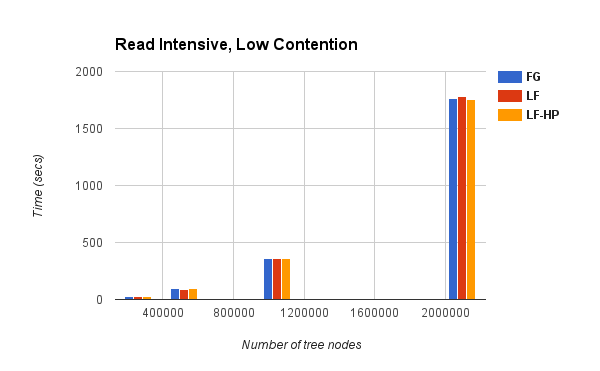
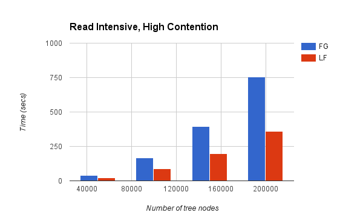
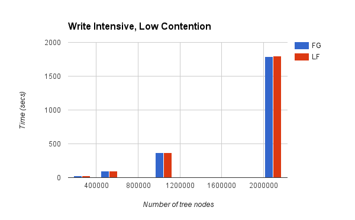
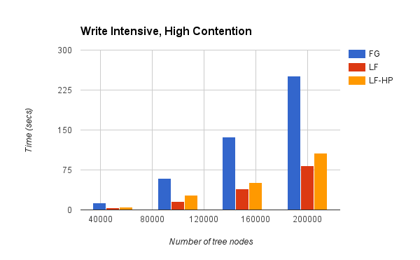

NOTE: We are heavily updating this page with some awesome results :-) Please visit us in a few hours. We won't disappoint :-)
Summary
We have implemented two variants of a synchronized binary search tree (BST) data structure on a shared memory model and analyzed the performance characteristics of both. Specifically, we have implemented a fine-grained locking version, and a lock-free version of the BST and compared the performance of both on a variety of traces. Our BST data structure supports insert, search and delete operations. We tested the performance under a variety of conditions - different tree sizes, different workloads (read-intensive, write-intensive, mixed) and different degrees of contention (low contention, high contention). The lock-free algorithm that we implemented uses atomic primitives like compare and swap (CAS) and value compare and swap (VCAS).
Design and Implementation
Our BST data structure does not allow duplicates. The delete of a leaf node is done by setting its parent's corresponding pointer to NULL. The delete of a node with a single child is done by making its parent's corresponding pointer point to the deleted node's child. The delete of a node with two children is performed with swapping its value with the next largest element in the tree and then that next largest element is deleted from the tree.
We implemented the fine-grained version with a pthread mutex lock associated with each node in the tree. We used the hand-over-hand locking mechanism for the insert and search operations. Since delete is done by swapping node values instead of actual pointer manipulation, a delete operation in the worst case requires a lock to be held on 4 nodes at a time.
We implemented the lock-free version using the design discussed in [1]. This algorithm is non-blocking, in that, overall system progress is guaranteed even if there is a possibility of some threads being starved. Every node in the tree has an additional operation field which is used to store details about an ongoing operation on the node and precludes concurrent updates to that node.
We identified the following memory management problem with the implementation of the above lock-free algorithm. The algorithm avoids the ABA problem occurring at the node pointers using "unique" NULL pointers. This is done by using the last two bits of the pointer. Since memory allocations are 4-byte and 8-byte aligned on 32-bit and 64-bit machines respectively, the least significant two or three bits of the pointer could be used to store auxiliary data. In order to ensure the uniqueness of these pointers and avoid the ABA problem, the memory they reference cannot be reused until the null pointer has been replaced. This makes it very difficult to figure out whether it is safe to free a pointer at a given point. A lock-free algorithm guarantees lock-free progress by allowing each thread unrestricted access to any object, at any time. When a thread removes a node, it is possible that some other contending thread has a reference to it and is about to access its contents. If the removing thread reclaims the memory and reuses it for some other purpose, the contending thread might corrupt it. Furthermore, if the reclaimed memory is returned to the OS, accessing that memory will result in a segmentation fault and cause the program to terminate. Keeping the memory allocated until the entire run of the program makes such implementations impractical for use on a real-world workload.
We solved this problem using the Hazard Pointers mechanism as described in [2]. Hazard pointers are single writer, multiple readers pointers. The idea is to maintain a per-thread list of hazard pointers. This list contains all the pointers that the thread currently holds reference to. Whenever any thread decides that a node can be removed from the tree it pushes that node in a per-thread "retired nodes (rlist)" list. When the size of this rlist goes beyond an arbitrarily set threshold the thread does a scan over all the nodes in its rlist. For every retired node in the rlist, it traverses the hazard pointers list of all the other threads and checks if any other thread still has a reference to it. If not, this node can be safely removed from the tree. Otherwise, the removal of this node is deferred until next time. Our experiments demonstrate that our technique reclaims more than 99% of the memory during the entire run of the program.
Results
Claims:
- The lock-free version performs significantly better than the fine-grained version under high-contention (Charts 2, 4 below)
- The fine-grained version performs as good as the lock-free version under low-contention (Charts 1, 3 below)
- Our memory manager / garbage collector based on hazard pointers reclaims almost 100% of the allocated memory while incurring only a slight overhead. (Charts coming very soon)
   
Links
References
- A non-blocking internal binary search tree
- Hazard Pointers: Safe Memory Reclamation for Lock-Free Objects
Authors and Contributors
Swapnil Pimpale, Romit Kudtarkar